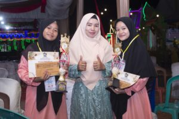

Ani Mardhatillah, mahasiswa Teknik Informatika UNRI menjadi juara 1 pada lomba Musabaqah Tilawatil Quran (MTQ) ke IV Tingkat Kecamatann Bathin Solapan, Kabupaten Bengkalis. Acara ini diselenggarakan mulai tanggal 16-23 September 2022 di Kantor Camat Bathin Solapan.
Ketua Prodi Teknik Informatika, Dr. Feri Candra turut mengapresiasi perolehan ini “Capaian ini sangat positif, dari Prodi mendukung berbagai bentuk prestasi Mahasiswa baik dibidang akademis maupun non akademis”.
Ani Mardhatillah meraih Juara 1 pada Cabang Tilawah Al Quran Golongan Remaja Putri. Selanjutnya, Ani akan mewakili kecamatan Bathin Solapan pada MTQ Kab. Bengkalis ke 47 yang rencana nya akan diselenggarakan pada tanggal 14 November 2022 di Kecamatan Bukit Batu, Kabupaten Bengkalis. Selamat dan semangat menorehkan prestasi.